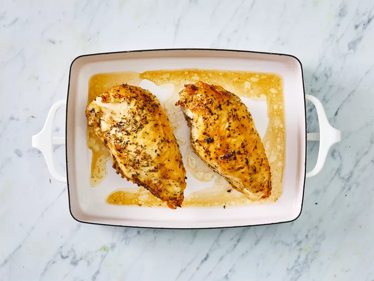

This is a very easy, but elegant, baked chicken breast recipe that looks like you've spent hours in the kitchen when you've barely lifted a finger! Turn chicken breasts into a golden, garlicky, and juicy meal with this 5-star recipe. Cook up deliciously seasoned and crispy chicken that turns a simple dinner into a sensational meal in a few easy steps. You'll be amazed at how quickly this dish comes together. Learn all about this impressive oven-baked chicken recipe, including how long to cook the chicken breast and how to store leftovers.
Enjoy an herb-infused chicken dish that doesn't shy away from big flavor. You'll find the full recipe below with step-by-step instructions, but here's what you can expect when you make this top-rated recipe; Use large, bone-in chicken breast halves for hearty results. Rub the breasts with olive oil and garlic, then sprinkle them with salt, pepper, dried rosemary, and basil. Place the chicken in a baking dish and refrigerate to allow flavors to marry.
Cooking chicken breast in the oven couldn't be simpler. Bake the marinated chicken at 375 degrees F for about 45 minutes, or until it reaches an internal temp of 165 degrees F. The juices should run clear and the flesh should be perfectly tender with no pink at the bone.
Having pre-cooked chicken on hand is great for making fast, tasty meals when you're short on time. When properly stored, baked chicken breast will last three to four days in the refrigerator. Be sure to use an airtight container or encase the chicken tightly in foil or plastic wrap. Freezing baked chicken breasts can extend their shelf life by three months. Wrap whole breasts in grease-proof paper, then place in an airtight container for best results.
Gather all ingredients.
Rub chicken breasts with olive oil and garlic; sprinkle with salt, black pepper, rosemary, and basil. Arrange chicken in a large baking dish.
Refrigerate for at least 45 minutes. Meanwhile, preheat the oven to 375 degrees F (190 degrees C).
Bake in the preheated oven until chicken meat is no longer pink at the bone and the juices run clear, 45 to 60 minutes. An instant-read thermometer inserted in the thickest part of the breast meat should read 165 degrees F (75 degrees C).
Serve hot and enjoy!